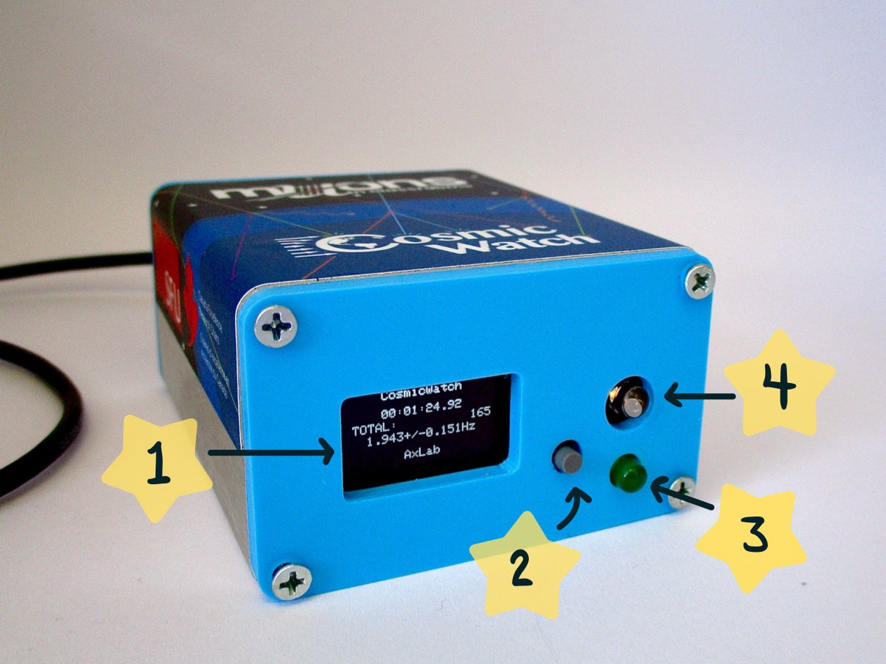

In B.C. high schools
B.C. Muons in Classrooms
Muons in Classrooms brings pocket-sized cosmic-ray muon detectors, assembled at SFU and TRIUMF, into B.C. high schools for hands-on exploration of particle physics. Following a classroom visit from the team, students continue to operate the detectors to observe cosmic-ray muons, collect and analyze real data, and explore applications of particle detection.
The project is led by Darren Grant, Luise Poley, and Bernd Stelzer.
Explore B.C. Muons in Classrooms